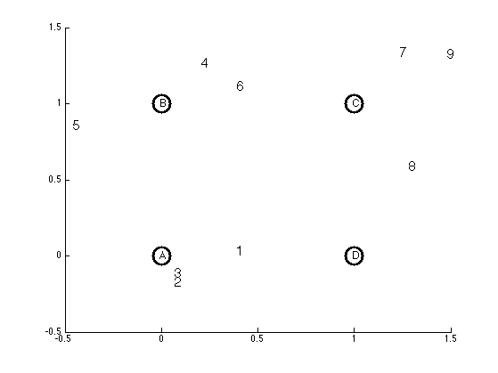
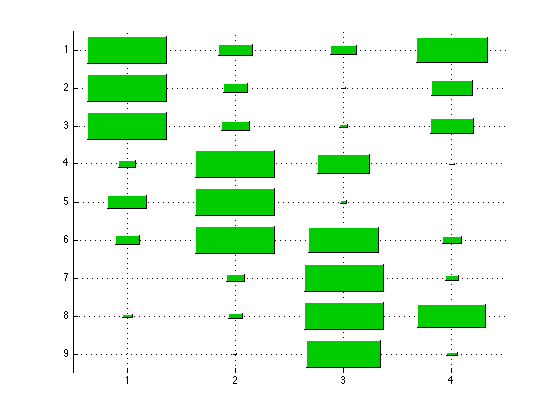

Demo of an RBF gram matrix
setSeed(2);
mu = [0 0; 0 1; 1 1; 1 0];
sigma = 0.05;
N = 9;
K = 4;
pi = normalize(ones(1,3));
X = zeros(N,2);
z = [1 1 1 2 2 2 3 3 3];
for c=1:3
ndx = find(z==c);
Nc = length(ndx);
X(ndx,:) = gaussSample(mu(c,:), sigma*eye(2), Nc);
end
figure;
for i=1:size(X,1)
text(X(i,1), X(i,2), sprintf('%d', i), 'fontsize', 15);
hold on
end
colors = 'kkkk';
names = {'A','B','C','D'};
for i=1:K
plot(mu(i,1), mu(i,2), 'o', 'markersize', 20, 'color', colors(i), 'linewidth', 3);
text(mu(i,1)-0.01, mu(i,2), sprintf('%s', names{i}), 'color', colors(i), 'fontsize', 12);
end
axis([-0.5 1.5 -0.5 1.5])
printPmtkFigure('rbfScatter')
K = kernelRbfSigma(X, mu, 0.5);
figure; hintonDiagram(K);
printPmtkFigure('rbfHinton')
 